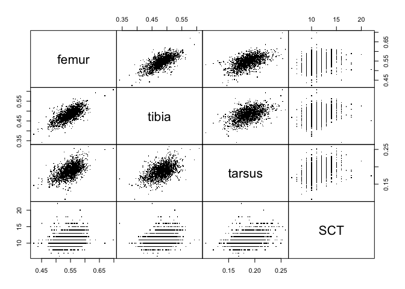
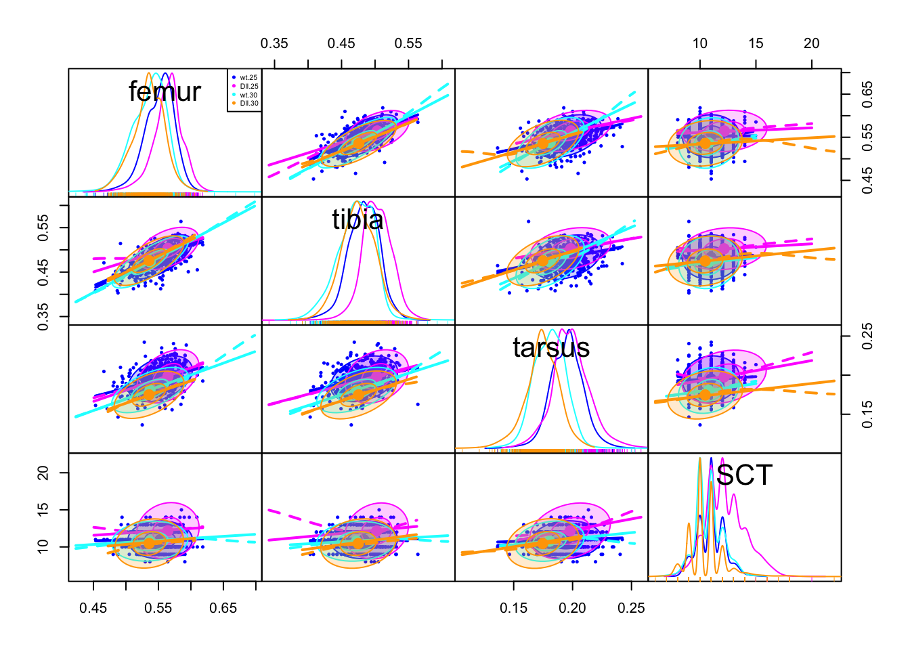

In today's class we are introducing how to model data when you have multiple continuous response variables. This can be done with a relatively simple extension of the linear models you learned previously (regression, ANOVA, ANCOVA style models).
You may also need to install the following packages. If you do not have them remove the '#' to uncomment the lines.
# install.packages("car")
# install.packages("geomorph")
library(car)
library(geomorph)the car package has some useful functions for helping to make inferences for multivariate linear models. the geomorph package is a specialized package for biological shape analysis (geometric morphometrics), but since this data is inherently multidimensional, there are many useful functions. Check the wiki out. Other useful packages include the vegan package, including the distance based multivariate analysis of variance using the adonis function in it. geomorph's linear model is a refinement of this.
We are also going to need some custom functions for multivariate analysis. We use these a lot, but we have been bad and not made an R package out of them. They are available on both our github pages here. We wrote most of them for a paper analyzing multivariate shape of Drosophila wings across altitudinal and latitudinal gradients. Check here for the paper and here for the full data and scripts. Lots of cool multivariate examples.
source("./MLM_Dworkin.R")
ls()## [1] "ang.vec.abs" "bci" "bci2" "df2"
## [5] "dll_data" "gaussmodel" "mlm_fit1" "mlm_fit2"
## [9] "mlm_fit4" "mlm_fit4_dist" "mlm_fit5" "PD"
## [13] "shapePRsq" "shapeRsq" "ShapeScore"We will use an old Drosophila melanogaster data set from my PhD work. The associated paper can be found here. This was from a study that was meant to test predictions of a model on how mutational and environmental variation can influence the overall structure of phenotypic variation. For this study I measured several traits (lengths) on the first leg as well as the number of sex comb teeth (a structure used to clasp females during copulation) for different wild type strains (line) reared at different developmental temperatures (temp), with and without a mutation that effects proximal-distal axis development in limbs (genotype).
dll_data = read.csv("http://datadryad.org/bitstream/handle/10255/dryad.8377/dll.csv", header=TRUE)Before we go on, how should we look at the data to make sure it imported correctly, and the structure (and other information) about the object we have just created?
summary(dll_data)## replicate line genotype temp femur
## Min. :1.00 line-7 : 132 Dll: 871 Min. :25.0 Min. :0.21
## 1st Qu.:1.00 line-18: 121 wt :1102 1st Qu.:25.0 1st Qu.:0.53
## Median :1.00 line-4 : 112 Median :25.0 Median :0.55
## Mean :1.18 line-8 : 110 Mean :27.4 Mean :0.55
## 3rd Qu.:1.00 line-2 : 104 3rd Qu.:30.0 3rd Qu.:0.57
## Max. :2.00 line-11: 100 Max. :30.0 Max. :0.70
## (Other):1294 NA's :24
## tibia tarsus SCT
## Min. :0.34 Min. :0.11 Min. : 6.0
## 1st Qu.:0.46 1st Qu.:0.18 1st Qu.:10.0
## Median :0.48 Median :0.19 Median :11.0
## Mean :0.48 Mean :0.19 Mean :11.2
## 3rd Qu.:0.50 3rd Qu.:0.20 3rd Qu.:12.0
## Max. :0.61 Max. :0.26 Max. :32.0
## NA's :19 NA's :17 NA's :25str(dll_data)## 'data.frame': 1973 obs. of 8 variables:
## $ replicate: int 1 1 1 1 1 1 1 1 1 1 ...
## $ line : Factor w/ 27 levels "line-1","line-11",..: 1 1 1 1 1 1 1 1 1 1 ...
## $ genotype : Factor w/ 2 levels "Dll","wt": 1 1 1 1 1 1 1 1 1 1 ...
## $ temp : int 25 25 25 25 25 25 25 25 25 25 ...
## $ femur : num 0.59 0.55 0.588 0.588 0.596 ...
## $ tibia : num 0.499 0.501 0.488 0.515 0.502 ...
## $ tarsus : num 0.219 0.214 0.211 0.211 0.207 ...
## $ SCT : int 9 13 11 NA 12 14 11 12 10 12 ...dim(dll_data)## [1] 1973 8head(dll_data)## replicate line genotype temp femur tibia tarsus SCT
## 1 1 line-1 Dll 25 0.590 0.499 0.219 9
## 2 1 line-1 Dll 25 0.550 0.501 0.214 13
## 3 1 line-1 Dll 25 0.588 0.488 0.211 11
## 4 1 line-1 Dll 25 0.588 0.515 0.211 NA
## 5 1 line-1 Dll 25 0.596 0.502 0.207 12
## 6 1 line-1 Dll 25 0.577 0.499 0.207 14Sometimes your data set has missing data, i.e. for some reason you could not measure one of your variables on a particular object. How you decide to deal with missing data can be a big topic, but for the moment we are going to assume you want to delete rows that contain missing data.
First let's check if there is any missing data
anyNA(dll_data)## [1] TRUEFor the moment we are just going to remove rows containing any missing data
dll_data <- na.omit(dll_data)
dim(dll_data)## [1] 1918 8For ease of interpretation, let's also make the wild-type level of genotype (wt) the base level.
dll_data$genotype <- relevel(dll_data$genotype, "wt")
levels(dll_data$genotype)## [1] "wt" "Dll"We will also make temperature (temp) a factor (it only has two levels so it does not matter that much).
dll_data$temp <- as.factor(dll_data$temp)Our response variables for this study are femur, tibia, tarsus and SCT. Let's check out some basic summary stats for them
summary(dll_data)## replicate line genotype temp femur
## Min. :1.00 line-7 : 127 wt :1077 25:1006 Min. :0.423
## 1st Qu.:1.00 line-18: 119 Dll: 841 30: 912 1st Qu.:0.530
## Median :1.00 line-4 : 110 Median :0.549
## Mean :1.18 line-8 : 108 Mean :0.546
## 3rd Qu.:1.00 line-2 : 100 3rd Qu.:0.565
## Max. :2.00 line-11: 97 Max. :0.698
## (Other):1257
## tibia tarsus SCT
## Min. :0.342 Min. :0.106 Min. : 6.0
## 1st Qu.:0.465 1st Qu.:0.175 1st Qu.:10.0
## Median :0.484 Median :0.188 Median :11.0
## Mean :0.482 Mean :0.188 Mean :11.1
## 3rd Qu.:0.501 3rd Qu.:0.200 3rd Qu.:12.0
## Max. :0.609 Max. :0.258 Max. :22.0
## apply(dll_data[,5:8], 2, sd)## femur tibia tarsus SCT
## 0.0279 0.0280 0.0179 1.6270apply(dll_data[,5:8], 2, mean)## femur tibia tarsus SCT
## 0.546 0.482 0.188 11.132While the three length measurements are on approximately the same scale (and all measured in mm), SCT is count data. So we will probably want to scale each of these to help make comparisons a bit clearer. Before we do that though. Let's ask how these variables co-vary with one another (across the whole data set). In general we prefer working with the variances and covariances, but it is easier to interpret the correlations among variables. We can easily look at both.
The phenotypic variance-covariance matrix:
cov(dll_data[ ,5:8])## femur tibia tarsus SCT
## femur 0.000781 0.000557 0.000285 0.00935
## tibia 0.000557 0.000785 0.000249 0.01080
## tarsus 0.000285 0.000249 0.000319 0.00860
## SCT 0.009349 0.010796 0.008597 2.64703The phenotypic correlation matrix:
cor(dll_data[, 5:8])## femur tibia tarsus SCT
## femur 1.000 0.712 0.571 0.206
## tibia 0.712 1.000 0.497 0.237
## tarsus 0.571 0.497 1.000 0.296
## SCT 0.206 0.237 0.296 1.000Let's visualize this as well.
pairs(dll_data[, 5:8],pch=".",gap=0)
We could do some more plotting to take a look (from the car package). However, there is so much overlap in the data among treatment variables, that it can be hard to see what is going on
scatterplotMatrix( ~ femur + tibia + tarsus + SCT | temp,
ellipse = TRUE, data = dll_data,
transform = TRUE, gap=0)
Not surprising since we have three length measures, but we see a moderate degree of correlation among these traits, likely reflecting a common factor (overall size). However, they are certainly not perfectly correlated with one another.
In general, when we are dealing with a set of multivariate response variables, this is the situation we want to be in. That is, if there is some correlation between our variables, it is not too high. If it was, I would probably consider using Principal Components Analysis or another dimensional reduction technique to get a few axes of variation that account for most of the variation. We could also check to see if the covariance matrix was not of full rank (i.e. for a covariance matrix for 4 variables, do we really have 4 "independent axes"). One quick check (which directly relates to PCA) is to examine the eigenvalues of the covariance matrix, and make sure the final ones are not really small.
We can extract the eigenvalues.
svd(cov(dll_data[, 5:8]))$d## [1] 2.647138 0.001366 0.000239 0.000175The final eigenvalue is not vanishingly small (which is all we need to worry about for the moment).
Like I mentioned earlier, we need to consider whether we should put all response variables on a common scale. This certainly can aid in comparisons with our vector of coefficients. However, if all of your data is already on a pretty similar scale, it may not matter much. In this case, because of SCT I think it is probably worthwhile.
For length measures it is common to instead to just log transform variables. This is something that can be helpful (but unnecessary with the current data). However, I will scale them here so you can get a sense of it.
dll_data$femur_s <- scale(dll_data$femur)
dll_data$tibia_s <- scale(dll_data$tibia)
dll_data$tarsus_s <- scale(dll_data$tarsus)
dll_data$SCT_s <- scale(dll_data$SCT)The variables now all have a mean of zero and a standard deviation of 1.
apply(dll_data[,9:12], 2, sd)## femur_s tibia_s tarsus_s SCT_s
## 1 1 1 1apply(dll_data[,9:12], 2, mean) ## very small ~ 0## femur_s tibia_s tarsus_s SCT_s
## 2.95e-16 9.07e-16 1.19e-16 4.51e-16And our co-variance matrix and correlation matrix should be identical.
cov(dll_data[,9:12])## femur_s tibia_s tarsus_s SCT_s
## femur_s 1.000 0.712 0.571 0.206
## tibia_s 0.712 1.000 0.497 0.237
## tarsus_s 0.571 0.497 1.000 0.296
## SCT_s 0.206 0.237 0.296 1.000cor(dll_data[,9:12])## femur_s tibia_s tarsus_s SCT_s
## femur_s 1.000 0.712 0.571 0.206
## tibia_s 0.712 1.000 0.497 0.237
## tarsus_s 0.571 0.497 1.000 0.296
## SCT_s 0.206 0.237 0.296 1.000The multivariate general linear model is:
\[ \mathbf{Y} = \mathbf{XB} + \mathbf{E} \]
Which you may recognize as being very similar to your univariate linear model. Indeed it is fundamentally the same. However instead of each observation having a single value for its response \(y_i\) for an individual \(i\), we are now in a situation where each individual has a response vector, which we denote as \(\mathbf{y}_i\). The vector for that observation is shown in bold as a common way to represent a vector of observations. Since you are using R you are actually already pretty familiar with this idea. i.e. if we stored y <- 1 or y <- c(1,2,3) we could recall this vector the same way. The same is true in matrix notation.
However, you see that instead of a lowercase bold \(\mathbf{y_i}\), I have instead represented this as an uppercase \(\mathbf{Y}\). This is matrix notation to denote a matrix of values. In this case it is meant to represent the \(( n x m)\) matrix, for the \(n\) observations in rows, and the \(m\) response variables we have, which in this case is 4 (femur, tibia, tarsus, SCT). It is standard matrix notation to always talk about 2 dimensional matrices in rows by columns.
How about the right hand side of the equation? Our \(\mathbf{X}\) is the design matrix (or model matrix). We will come back to that in a second. Our \(\mathbf{B}\) matrix is the matrix of regression coefficients from our model. If you were fitting a simple linear regression, you are used to estimating a slope \((\beta)\) for the model \(y = \alpha + \beta x + \epsilon\).
Even for a simple multivariate linear model (with only a single quantitative predictor variable), we will still estimate a coefficient for each response variable (i.e. a vector. As we add more predictors, this generalizes to a matrix of coefficients. Finally the \(\mathbf{E}\) is just a generalization of the residual variation unaccounted for by the model. i.e. it is the same idea as \(\epsilon\) for a simple linear model, but we have a vector \(\mathbf{e_i}\) of residuals for each observation (\(i\)) instead of a single value.
However, otherwise the same ideas really apply. We use some approach to estimate the slopes. Just like for a single response, the MLE and LS estimators are equivalent under most conditions and can be found with:
\[ \hat{\mathbf{B}} = (\mathbf{X'X})^{-1} \mathbf{X'Y} \]
Let's give it a whirl. We will start with a really simple model with a single predictor with two levels (genotype). Importantly you do need to let R know that your response variables are numeric. Otherwise the call is a standard call to lm
mlm_fit1 <- lm(as.matrix(dll_data[,9:12]) ~ genotype, data = dll_data)
class(mlm_fit1)## [1] "mlm" "lm"So what do we get from this? Summary does not give us what we want. Instead it provides the linear model for each response variable in turn. So not so helpful.
summary(mlm_fit1)## Response femur_s :
##
## Call:
## lm(formula = femur_s ~ genotype, data = dll_data)
##
## Residuals:
## Min 1Q Median 3Q Max
## -4.356 -0.610 0.097 0.703 5.500
##
## Coefficients:
## Estimate Std. Error t value Pr(>|t|)
## (Intercept) -0.0690 0.0304 -2.27 0.02335 *
## genotypeDll 0.1573 0.0459 3.43 0.00062 ***
## ---
## Signif. codes: 0 '***' 0.001 '**' 0.01 '*' 0.05 '.' 0.1 ' ' 1
##
## Residual standard error: 0.997 on 1916 degrees of freedom
## Multiple R-squared: 0.00609, Adjusted R-squared: 0.00557
## F-statistic: 11.7 on 1 and 1916 DF, p-value: 0.000622
##
##
## Response tibia_s :
##
## Call:
## lm(formula = tibia_s ~ genotype, data = dll_data)
##
## Residuals:
## Min 1Q Median 3Q Max
## -5.246 -0.608 0.058 0.676 4.676
##
## Coefficients:
## Estimate Std. Error t value Pr(>|t|)
## (Intercept) -0.1719 0.0299 -5.75 1e-08 ***
## genotypeDll 0.3921 0.0451 8.69 <2e-16 ***
## ---
## Signif. codes: 0 '***' 0.001 '**' 0.01 '*' 0.05 '.' 0.1 ' ' 1
##
## Residual standard error: 0.981 on 1916 degrees of freedom
## Multiple R-squared: 0.0379, Adjusted R-squared: 0.0374
## F-statistic: 75.4 on 1 and 1916 DF, p-value: <2e-16
##
##
## Response tarsus_s :
##
## Call:
## lm(formula = tarsus_s ~ genotype, data = dll_data)
##
## Residuals:
## Min 1Q Median 3Q Max
## -4.472 -0.652 0.008 0.634 4.024
##
## Coefficients:
## Estimate Std. Error t value Pr(>|t|)
## (Intercept) 0.0624 0.0304 2.05 0.040 *
## genotypeDll -0.1423 0.0459 -3.10 0.002 **
## ---
## Signif. codes: 0 '***' 0.001 '**' 0.01 '*' 0.05 '.' 0.1 ' ' 1
##
## Residual standard error: 0.998 on 1916 degrees of freedom
## Multiple R-squared: 0.00499, Adjusted R-squared: 0.00447
## F-statistic: 9.6 on 1 and 1916 DF, p-value: 0.00197
##
##
## Response SCT_s :
##
## Call:
## lm(formula = SCT_s ~ genotype, data = dll_data)
##
## Residuals:
## Min 1Q Median 3Q Max
## -3.336 -0.555 0.060 0.675 6.499
##
## Coefficients:
## Estimate Std. Error t value Pr(>|t|)
## (Intercept) -0.1413 0.0301 -4.70 2.8e-06 ***
## genotypeDll 0.3223 0.0454 7.09 1.8e-12 ***
## ---
## Signif. codes: 0 '***' 0.001 '**' 0.01 '*' 0.05 '.' 0.1 ' ' 1
##
## Residual standard error: 0.987 on 1916 degrees of freedom
## Multiple R-squared: 0.0256, Adjusted R-squared: 0.0251
## F-statistic: 50.3 on 1 and 1916 DF, p-value: 1.83e-12Instead we need to let R know we want this as a single multivariate linear model.
summary(manova(mlm_fit1))## Df Pillai approx F num Df den Df Pr(>F)
## genotype 1 0.102 54 4 1913 <2e-16 ***
## Residuals 1916
## ---
## Signif. codes: 0 '***' 0.001 '**' 0.01 '*' 0.05 '.' 0.1 ' ' 1Unfortunately, by default this spits out a minimal amount of useful information. While the object contains a few additional bits of information that are useful, mostly this is all about getting a p-value. Before we go on to something more useful, let's talk about what is going on with this output.
While we have just estimated a single predictor variable (genotype) you can see we are not using just one degree of freedom, but 4 (num Df). This is because we have 4 response variables that we are estimating. This is the first (and one of the most important) things to keep in mind with a multivariate linear model. We will be estimating a lot more parameters, so we need to keep in mind how much we can estimate in a model. As we will see below, this is why distance based approaches (like in adonis/vegan and geomorph) are often used.
The other two things to note is this "Pillai" statistic and the approximate \(F\) statistic. It turns out that with the matrices that are used for inference (\(\mathbf{H}\) the hypothesis matrix) in a multivariate test, there are multiple possible test statistics that can be evaluated based on the eigenvalues. Essentially we want to examine the eigenvalues of \(\mathbf{HE^{-1}}\) where \(\mathbf{E}\) is the matrix of residuals. There are four commonly used test statistics that are derived from the eigenvalues of this matrix. I don't want to get into this here, but do check out inferences for multivariate linear models for more information, and how it is used in car. While this defaults to Pillai's trace, many in biology seem to use Wilks's \(\lambda\). Most of the time these give pretty similar results. You can easily change it, like so:
summary(manova(mlm_fit1), test = "Wilks")## Df Wilks approx F num Df den Df Pr(>F)
## genotype 1 0.899 54 4 1913 <2e-16 ***
## Residuals 1916
## ---
## Signif. codes: 0 '***' 0.001 '**' 0.01 '*' 0.05 '.' 0.1 ' ' 1In each case a test statistic, an approximation of the F statistic and a p-value. It is worth seeing how the car package handles this. For the moment this appears the same.
Anova(mlm_fit1)##
## Type II MANOVA Tests: Pillai test statistic
## Df test stat approx F num Df den Df Pr(>F)
## genotype 1 0.102 54 4 1913 <2e-16 ***
## ---
## Signif. codes: 0 '***' 0.001 '**' 0.01 '*' 0.05 '.' 0.1 ' ' 1We would like to start to think about effect size. This is not something that is universally agreed upon in multivariate statistics. However in both morphometrics and genomics it is typical to use the magnitude or length of the vector for coefficients associated with the response. This is sometimes known as the L2 norm of the vector, but you can mostly easily think about it as the square root of the sum of squares of the coefficients, i.e:
\[ || \mathbf{x} || = \sqrt{\mathbf{x'} \cdot \mathbf{x}} \]
This is equivalent to: \[ || \mathbf{x} || = \sqrt{x^{2}_{1} + x^{2}_{2} + \cdots + x^{2}_{n} } \]
which you may recognize from the Pythagorean theorem.
For our model we can examine the coefficients easily
coef(mlm_fit1)## femur_s tibia_s tarsus_s SCT_s
## (Intercept) -0.069 -0.172 0.0624 -0.141
## genotypeDll 0.157 0.392 -0.1423 0.322sqrt(t(coef(mlm_fit1)[2,]) %*% coef(mlm_fit1)[2,])## [,1]
## [1,] 0.55However, this gets annoying to write out each time. So one of the functions in the source file does this for you. PD() (for Procrustes Distance) computes the Euclidean Distance between two vectors, but also can compute the length of the vector we want.
PD(coef(mlm_fit1)[2,])## [,1]
## [1,] 0.55Unfortunately in many fields of biology interpreting this magnitude of effect can be tricky. I will show you one example from this paper to give you some ideas. To make sense of it, and what your expectations are under the null, we generated permutations of the data and computed the length of those vectors to generate a distribution. In some fields (like geometric morphometrics), this measure is used quite commonly so we have an easier time with biological interpretation and comparison. To generate confidence intervals on this we generally utilize non-parametric bootstrapping.
We might also like to understand how much variation (of all of the variation) that the model accounts for. As this is multivariate data, there are actually multiple ways of doing this (based on both the trace of the matrix and some based on the determinant). So there is no single \(R^2\) measure. However, there is a relatively simple one that we like to employ, recognizing that it does not capture everything. Essentially we take the trace (sum of the elements on the diagonal) of the variance covariance matrix for the observed data as a measure of total variation in the data. We then ask how much of the variation in the trace of the matrix is accounted for by the trace of the fitted values. i.e:
\(\frac{Tr(\mathbf{V}_{\hat{Y}})}{Tr(\mathbf{V}_{Y})}\)
Where \(Tr(\mathbf{V}_{\hat{Y}})\) is the trace for the matrix of fitted values, and \(Tr(\mathbf{V}_{Y})\) is the trace for the observed.
Since we have scaled all of our observations in our response, then we know that the trace needs to be equal to the number of variables we are using in our response (4 in this case). Let's check
sum(diag(cov(dll_data[,9:12])))## [1] 4How about for our fitted values?
sum(diag(cov(mlm_fit1$fitted)))## [1] 0.0746sum(diag(cov(mlm_fit1$fitted)))/sum(diag(cov(dll_data[,9:12])))## [1] 0.0186So we can account for just under 2% of the variation (based on this measure) in all of our response variables, using genotype as the sole predictor.
Once again, the above code is annoying to write, so we have written a nice function for you, shapeRsq:
shapeRsq(mlm_fit1)## [1] 0.0186Before we get too complicated with our model, I also want to show you a distance based approach, as implemented in geomorph. This is useful because we are computing distances (essentially Euclidean distances) between observations (although not the raw distances, but based on the mean estimates within and between treatment levels). This means we are ultimately estimating far fewer coefficients, so can be very helpful when we have large numbers of response traits relative to number of observations.
They have a number of functions in the geomorph package, but for most needs, I suggest starting with procD.lm
mlm_fit2 <- procD.lm(f1 = dll_data[, 9:12] ~ genotype, data = dll_data, iter = 2000 )summary(mlm_fit2)##
## Call:
## procD.lm(f1 = dll_data[, 9:12] ~ genotype, iter = 2000, data = dll_data)
##
## Type I (Sequential) Sums of Squares and Cross-products
## Randomized Residual Permutation Procedure Used
## 2001 Permutations
## ANOVA effect sizes and P-values based on empirical F distributions
##
##
## Df SS MS Rsq F Z Pr(>F)
## genotype 1 143 142.9 0.019 36.4 4.26 5e-04 ***
## Residuals 1916 7525 3.9 0.981
## Total 1917 7668
## ---
## Signif. codes: 0 '***' 0.001 '**' 0.01 '*' 0.05 '.' 0.1 ' ' 1Of note, this allows for several different types of permutation tests, by default based on using the residuals from a reduced model (in this case there is only one.)
Note that it actually provides the same estimated coefficients, as these are typically used to compare Procrustes Distance (Euclidean Distance) as a measure of effect size
coef(mlm_fit2)## femur_s tibia_s tarsus_s SCT_s
## (Intercept) -0.069 -0.172 0.0624 -0.141
## genotypeDll 0.157 0.392 -0.1423 0.322The 'advanced.procD.lm()` can do much of this automatically, but it is designed to compare sets of nested models.
As with any other general linear model you want to examine how well the model fit conforms to the assumptions of the GLM. This gets a bit trickier for multivariate data, although it can still be done. The most difficult issue is whether the residuals conform to multivariate normality. While there are a number of tests for this, in almost all cases with reasonable amounts of data, MVN seems to be rejected. Therefore, most researchers use non-parametric resampling (bootstrapping and permutation tests) to aid in the inferences. There are several approaches to this. See both the adonis() and the functions in geomorph for some examples. On our github page with the code for this paper we have some different approaches. Remember that it gets tricky to do permutation tests for complex models (where you can not just do a simple permutation of response data relative to predictors). Also keep in mind that you want to resample at the levels of observations (rows), not single variables!
Let's add some complexity to the model. We have additional predictors, temp (rearing temperature) and line (different wild type strains.)
mlm_fit4 <- lm(as.matrix(dll_data[,9:12]) ~ temp + genotype, data = dll_data)
mlm_fit5 <- lm(as.matrix(dll_data[,9:12]) ~ temp*genotype, data = dll_data)
Anova(mlm_fit5)##
## Type II MANOVA Tests: Pillai test statistic
## Df test stat approx F num Df den Df Pr(>F)
## temp 1 0.3077 212.3 4 1911 <2e-16 ***
## genotype 1 0.1042 55.6 4 1911 <2e-16 ***
## temp:genotype 1 0.0761 39.3 4 1911 <2e-16 ***
## ---
## Signif. codes: 0 '***' 0.001 '**' 0.01 '*' 0.05 '.' 0.1 ' ' 1mlm_fit4_dist <- procD.lm(dll_data[,9:12] ~ genotype*temp,
data = dll_data, iter = 2000)summary(mlm_fit4_dist)##
## Call:
## procD.lm(f1 = dll_data[, 9:12] ~ genotype * temp, iter = 2000,
## data = dll_data)
##
## Type I (Sequential) Sums of Squares and Cross-products
## Randomized Residual Permutation Procedure Used
## 2001 Permutations
## ANOVA effect sizes and P-values based on empirical F distributions
##
##
## Df SS MS Rsq F Z Pr(>F)
## genotype 1 143 143 0.019 44.2 4.47 5e-04 ***
## temp 1 1136 1136 0.148 351.2 6.63 5e-04 ***
## genotype:temp 1 200 200 0.026 61.8 5.22 5e-04 ***
## Residuals 1914 6190 3 0.807
## Total 1917 7668
## ---
## Signif. codes: 0 '***' 0.001 '**' 0.01 '*' 0.05 '.' 0.1 ' ' 1We can look at the lengths of the vectors to get a sense of relative effects of temp, genotype and their interaction.
PD(coef(mlm_fit5)[2,])## [,1]
## [1,] 1.06PD(coef(mlm_fit5)[3,])## [,1]
## [1,] 1.16PD(coef(mlm_fit5)[4,])## [,1]
## [1,] 1.3How about variance accounted for? We have a slightly more advanced version for this. However, with interaction terms, this can be difficult to interpret (and we tend to only use it for main effects)
shapeRsq(mlm_fit4)## [1] 0.167shapePRsq(mlm_fit4)## $Rsquared
## [1] 0.167
##
## $partials
## variable.name partial.Rsq
## 1 temp 0.150926579344358
## 2 genotype 0.0257889597702598shapePRsq(mlm_fit5)## $Rsquared
## [1] 0.193
##
## $partials
## variable.name partial.Rsq
## 1 temp -1.3753888557632e-16
## 2 genotype -2.7507777115264e-16
## 3 temp:genotype 0.0312535650989142